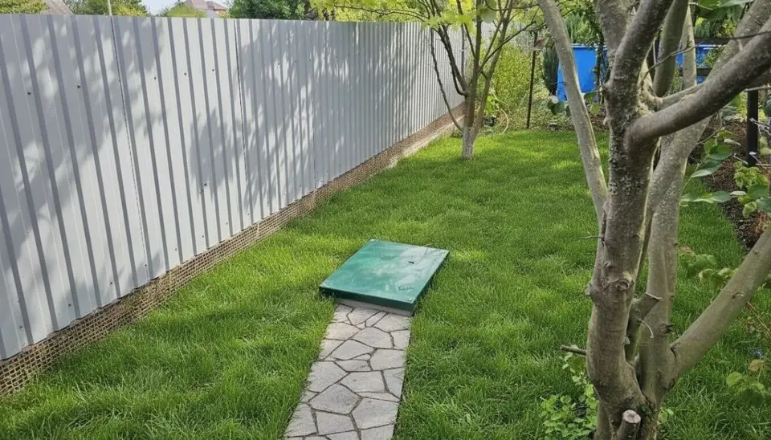
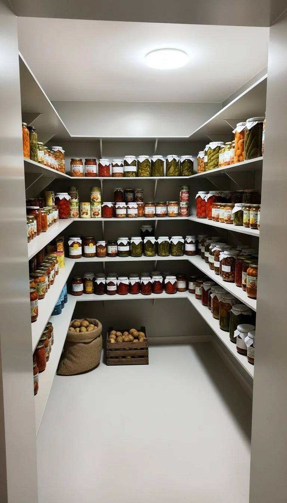
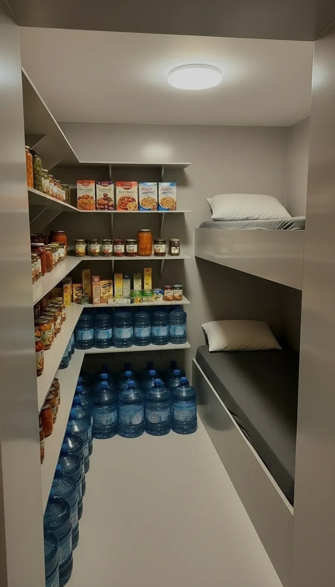

Варим герметичные погреба и усиленные бункеры-укрытия из пищевого полипропилена: не гниёт, не ржавеет, не течёт. Погреб — от 158 900 ₽, монтаж — от 2 часов.
Отвечаем в течение часа · 9:00–20:00 МСК · без выходных
Расчёт бесплатный и ни к чему не обязывает

Погреб из полипропилена ставят там, где классические материалы подводят: высокие воды, глина, сырость. Четыре типовые ситуации — и что мы делаем в каждой.
Это наш основной случай: герметичный корпус не пустит воду внутрь. При больших размерах добавляем внешнее армирование композитом и бетонирование стен и потолка.
Пластику в глине нечему портиться: не гниёт, не ржавеет, не впитывает влагу. Особенности монтажа на вашем грунте учтём в расчёте.
Варим под задачу: нестандартные размеры, секции с переходами, нары, стол и скамья — от хранилища урожая до варианта под укрытие.
Пришлите фото участка и город — уточним грунт, воды и подъезд, посоветуем размер и комплектацию. Расчёт бесплатный, обычно в тот же день.
Фото участка и город — этого достаточно, чтобы сказать, как ставить и сколько это стоит.
Привычные погреба для хранения урожая и усиленные погреба-бункеры для защиты. Оба — из сертифицированного пищевого полипропилена.

Полностью герметичное хранилище для дома и дачи. Не ржавеет как металл, не гниёт как дерево, не покрывается грибком как бетон.

Усиленная конструкция: толстое армирование, рёбра жёсткости, тамбур, приточная вентиляция с возможностью автономии.
Тот же премиальный подход — в купелях и бассейнах: пищевой полипропилен, облицовка из лиственницы, гидромассаж и подсветка. Производим с 2017 года.
Каталог купелей и бассейнов →Прозрачно: считаем от базовой комплектации, дальше — только то, что нужно вашему участку. Итог фиксируем в договоре.
Погреб 1,5 × 1,66 × 1,83 м в базе: стенки 10 мм, крышка с УФ-защитой, два канала вентиляции Ø110, полки, лестница, LED-светильник.
Утепление, внешнее армирование композитом, активная вентиляция, свои размеры, секции и переходы, нары, стол и скамья. Ничего лишнего не навязываем.
Под ключ — Краснодар и ближние районы края (возможность по вашему адресу подтвердим в расчёте): без бетона от 2 часов до 1 дня, с бетонированием — 3–4 дня. В других регионах — доставка по всей России и установка своими силами или вашей бригадой: подскажем по фото участка.
Бункер-укрытие 2 × 2 × 2,3 м — от 320 000 ₽, дальше — индивидуально. Точная смета — после фото участка, обычно в тот же день.
Мы не начали варить погреба ради нового товара. Больше восьми лет производим изделия из полипропилена — купели, бассейны, ёмкости и погреба: свыше 3000 изделий с собственного производства в Краснодаре.
Вода снаружи не пройдёт — осушать не придётся.
Под землёй нет ультрафиолета — врага пластика.
Первичный полипропилен: без запаха и привкуса.
Ни покраски, ни пропиток. Помыл — и всё.
Мыши не грызут, плесень не заводится.
Без бетона — от 2 часов до 1 дня.
В любой регион России, способ подберём в расчёте.
* Расчётный срок службы в земле: без ультрафиолета пластик не стареет.
| Полипропилен | Бетон | Металл | |
|---|---|---|---|
| Грунтовая вода | Не проходит: корпус сварен герметично | Как правило, нужна гидроизоляция | Слабое место — швы и коррозия |
| Гниение, плесень | Нечему гнить, плесени не на чём расти | Может сыреть и зарастать плесенью | Ржавеет от влаги |
| Обслуживание | Помыл — и всё | Просушка и обработка | Контроль швов, подкраска |
| Монтаж | Один день, без бетона | Стройка: опалубка и созревание | Быстро, но нужен кран |
| Срок в земле | 50–120 лет* (расчётный) | Десятилетия — зависит от гидроизоляции | Определяет коррозия |
Сравнение — по типовым свойствам материалов, а не по конкретным конкурентам: и бетон, и металл могут быть сделаны хорошо — за другие деньги и сроки.
Расчёт бесплатный и ни к чему не обязывает — ответим в течение часа (9:00–20:00 МСК).
Продумали процесс так, чтобы у вас на участке не было сюрпризов.
Уточняем размер, тип грунта, грунтовые воды и электричество на участке.
Смета: корпус, вентиляция, полки, лестница, утепление. Цена фиксируется.
Варим из листов 10 мм на собственном производстве в Краснодаре.
Манипулятором: своими силами — 2 часа–1 день; под ключ нашей бригадой (Краснодар и ближние районы края) — 3–4 дня.
Внутри сухо, темно и прохладно. Конденсат снимается осушителем.
Напишите, что хотите хранить и в каком вы городе — вернёмся с ценой и сроком в течение часа. Это ни к чему не обязывает.
Стартовый размер 1,5 × 1,66 × 1,83 м — от 158 900 ₽. Дальше цена зависит от размера, крышки, полок, лестницы, утепления и армирования. Бункер 2 × 2 × 2,3 м — от 320 000 ₽, дальше считается индивидуально. Точный расчёт — после заявки, обычно в тот же день. Рассчитать мой вариант →
Да — герметичный полипропиленовый корпус как раз для таких участков. При высоких водах и больших размерах рекомендуем внешнее армирование композитом и бетонирование стен и потолка.
При высоких водах и больших размерах мы рекомендуем бетонирование стен и потолка — оно удерживает корпус в грунте и добавляет прочности. Под ваш участок подскажем по фото: возможно, оно не понадобится.
Да. Полипропилену в глине нечему портиться: он не гниёт, не ржавеет и не впитывает влагу. Особенности монтажа на глинистом грунте учтём в расчёте — достаточно фото участка.
Не обязательно: без бетонирования монтаж занимает от 2 часов до одного дня. Бетонирование (3–4 дня) советуем при высоких грунтовых водах, тяжёлой технике над погребом и размерах от 2 × 3 м.
Под ключ — Краснодар и ближние районы края: точную возможность по вашему адресу подтвердим в расчёте, бесплатно и за минуту. В остальных регионах — доставка по всей России, а установку делают своими силами или вашей бригадой: погреб ставится манипулятором за 2 часа–1 день, подскажем по фото участка и ответим на вопросы монтажа.
Во всех моделях — два вентиляционных канала Ø 110 мм: приточный и вытяжной. У моделей покрупнее — активная вентиляция с вентилятором и LED-светильник; для них нужно электричество 220 В на участке.
Воздухообмен держат два канала вентиляции Ø 110 мм — приточный и вытяжной. На очень влажных участках конденсат снимается осушителем; подскажем, нужен ли он вам, в расчёте.
Да, это популярная опция — переходы между секциями, полки, нары, стол и скамья. Собираем под вашу задачу, включая варианты под укрытие.
Да. Варим под задачу: свои размеры, секции с переходами, нары, стол и скамья. Отталкиваемся от базовых: погреб от 1,5 × 1,66 × 1,83 м, бункер от 2 × 2 × 2,3 м — дальше любой размер под ваш котлован.
Мы не начали варить погреба ради нового товара: больше восьми лет делаем изделия из полипропилена — купели, бассейны, ёмкости и погреба. Собственное производство в Краснодаре, свыше 3000 изделий. Без посредников — поэтому цена ниже, а сроки короче.
Не нашли свой вопрос? Задайте его в WhatsApp — ответим честно и без давления. Или позвоните: +7 (861) 213-22-15.
Оставьте имя и телефон — вернёмся с ценой и сроком в течение часа (9:00–20:00 МСК). Бесплатно и ни к чему не обязывает.